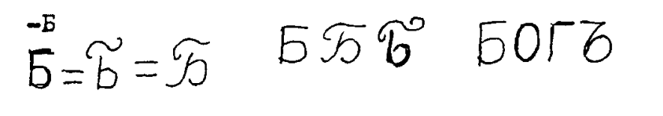
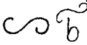
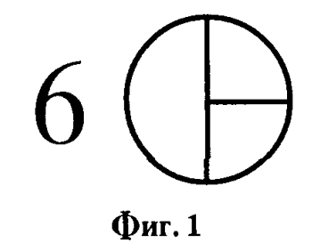
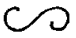
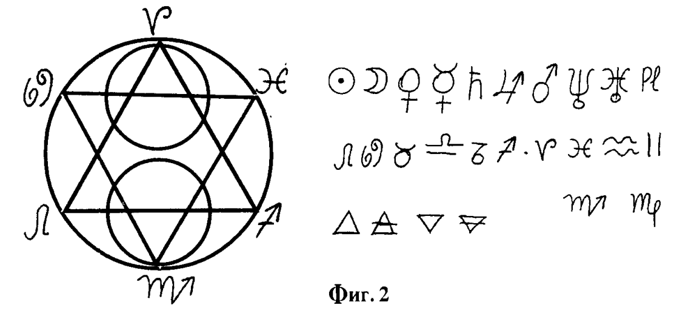
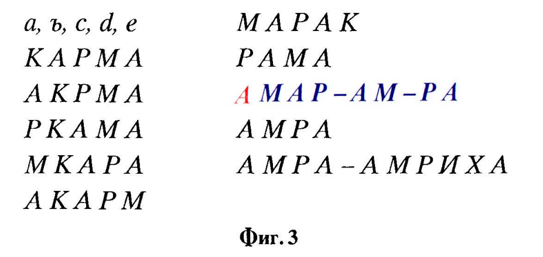

Тръгни нагоре 12 април 1922 г.
Под думата Бог разбирам движение в правилна насока на битието.

В буквата б има вече една пълна шестица плюс знака на 
. Какво показва числото 6? В него разгледано геометрически се включва целият вертикален, отвесен диаметър, дясната половина на хоризонта или десният радиус и дясната долна четвъртинка от окръжността. Шест е дясно число, мъжко и показва проявление.

Лъчът отгоре слиза долу, в материята, прави четвърт обръщане около себе си и се прибира в центъра. Това са двете, защото 6 е равно на две по три. Първата е Божествената троица: Дух, душа, тяло. Втората е човешката троица: ум, сърце, воля. Значи това е Божествената троица проявена в материята като човек със своите три принципа, които съставляват полетата на неговата проява. Шест е числото на човека. Ако го разложим по друг начин: 6=2x3=2(2+1)=2x2 +2=4+2 Шест равно на две по три, равно на две(2 плюс1) равно на две, две по две плюс две равно на 4 плюс 2.
„Трима свидетелствуват на небеса: Отец, Син и Дух Свети". И трима са които свидетелствуват на земята: огън, кръв и вода. Отец - първичния огън. Слово - жертвената кръв. Дух - вода на кръщение. Шест равно на три плюс три.
Б - освен шесторката в буквата „Б" има и знак на безкрайност. 
Значи 6-те - човекът, проявената Божествена троица, която се е ограничила и слязла долу, за да се заключи в материята е запазила своето първоначално движение в безкрайността. Тя идва от безкрайността като комета, слиза, за да се прояви и отива пак в безкрайността, затова човек още докато е на земята трябва да просветне, за да може да поеме друм отново към безкрайността. Докато той не е просветнал, той описва все нови и нови повратни кръгове, връща се отново и отново на земята. Той трябва да стане син Божия, като приеме кръщението на Духа, трябва да пролее кръвта си, за да стане после едно с огъня - Отец, из Когото е излязъл, защото той се ражда агнец - огън, овен - излиза от огъня и там трябва да се върне, защото „Бог наш е огън пояждащ." Кой атрибут на Божественото се крие под тези думи „огън пояждащ"? Трябва да се знае оригинала на хебрейски - за да се изясни напълно скритото значение и мистичния смисъл на думата.

Пред КАР седи творческия процес А, която е вече уравновесената душа, водена от разумното, което е ритмовано. Двете А са уравновесени блюда на везните, показват че има една разумна основа, на която става градеж по законите и MP - Свещените букви на мировата душа и този строеж има за последна цел горното А, а от една по-висока гама и така до безкрайност. MP е връзката между физическата проява и неговото съответствие в царството на Духа.

Значи в карма се крият тези тайни, тя е виновницата за създаването на света - творението се развива по великия закон на карма. Карма е първото движение на мировите води. Тайната седи в мистичното значение на буквите, които са като елементи на едно между тях, тогава има друго проявление на същите принципи. Крайно необходимо е да се проникне в тайното значение на буквите -сега друг е въпроса, ако имаме работа седна от древните азбуки, създадени по [...] изображение известни съзвездия - така тази буква, която има връзка с някое от съзвездията ще крие в себе си силите, които й се съобщават от това съзвездие. Градежът на буквите е цяло откровение за този, който може да чете и е разумял окултното значение на геометрическите линии и знаци, защото всяка буква е една геометрическа фигура. Всяка линия, фигура, буква, цвят, нота, точица, всичко има дълбок смисъл и значение за знаещия.